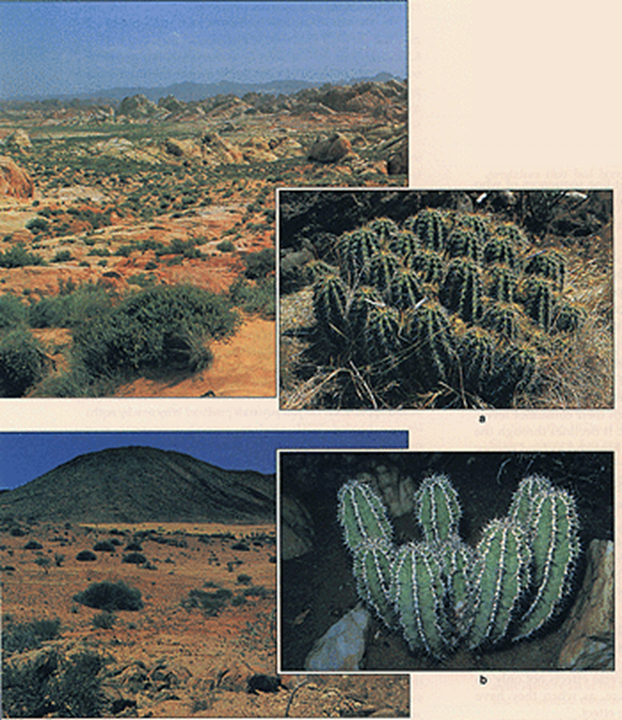
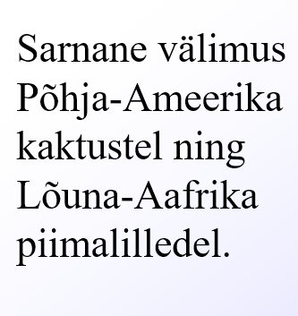
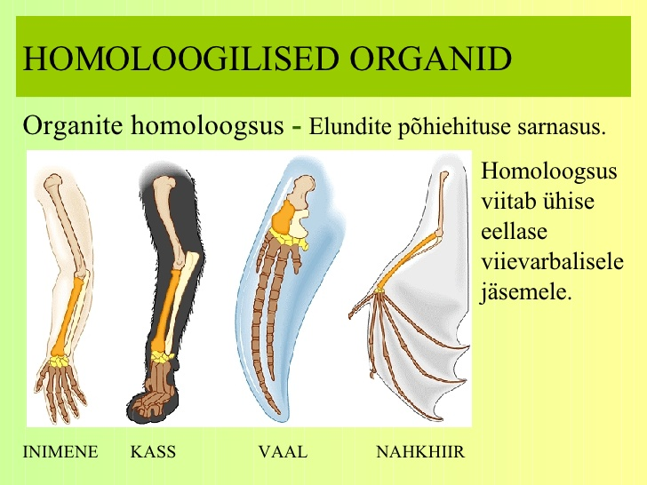
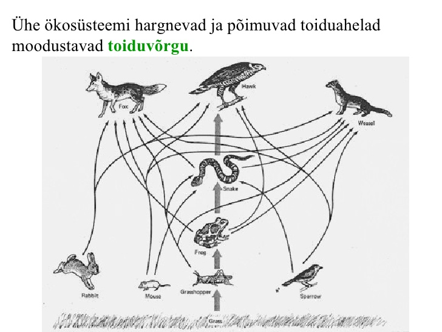

http://www2.hariduskeskus.ee/opiobjektid/loodusained/?EVOLUTSIOON:LOODUSLIK_VALIK:Kohastumine (asjalik link, mis arvestuse ajal lahti võtta)
1. Kas ma oskan selgitada mõistet evolutsioon?
Evolutsioon on päritavate tunnuste pöördumatu muutumine põlvkonnast põlvkonda organismide populatsioonides.
2. Kas ma oskan kirjeldada mõttekäike, mis viisid evolutsiooniidee kujunemisele sellisel kujul nagu me seda kaasajal tunneme?
Abiks: Millega seostuvad evolutsioonibioloogias järgmised teadlased: Platon, Aristoteles, Buffon, Linné Georges Cuvier, Alfred Russel Wallace, Jean-Baptiste de Lamarck, Charles Darwin
Platon ja Aristoteles - maailm on loodud ja ebatäiuslik koopia ideaalsest vormist. Idee pidurdab evolutsiooniteooria arengut pikaks ajaks.
Buffon - liigid arenesid väikesest hulgast eellasliikidest.
Linné - biosüstemaatika looja, liikide muutused on ettemääratud.
Georg Cuvier - fossiilid viitavad väljasuremisele, kuid liigid on loodud ja muutumatud.
J. B. Lamarck - liigid on muutuvad ja lihtsamatest vormidest kujunevad keerukamad. Elujooksul omandatud tunnused päranduvad.
Charles Darwin - Looduslik valik, liigid on muutumises vastavalt kohanemisele keskkonnaga. Avaldas raamatu "Liikide tekkimine".
Alfred Wallace - Liigid on pidevas muutumises tänu kohanemisele keskkonnaga.
3. Kuidas ma vastaks kreatsionistile, kui ta väidab, et elu on loodud?
Abiks: Kreatsionistliku ja evolutsionistliku maailmavaate seisukohad – faktid ja ideed. Milles on peamine vastandumine Kas ja kuidas evolutsiooniteooria lükkab ümber kreatsionistlikku maailmavaadet?
Tooksin 7. küsimuses välja toodud väited.
Erinevatel mandritel on sarnased loomad.
Mõnda looma on mitu sarnast isendit, miks jumal teeks mitu sarnast mitte ainult ühe.
Erinevad ehituslikud asjad, millel sama eesmärk: ntks tiivad nahkhiir vs lind.
Looduslik valik, paremini keskkonnas hakkama saavad loomad jäävad ellu.
Kivistised, mis ei ole praeguse ühegi looma sarnased.
4. Kas ma oskan kirjeldada erinevaid ideid elu tärkamise kohta Maal ja tuua välja nende ideede tugevused ja nõrkused?
Abiks: Millised faktid toetavad elu isetärkamise ideed, millised ideed, et elu on planeedile Maa saabunud väljaspoolt?
5. Kas ma oskan kirjeldada, millised tähelepanekud viisid Darwini ja Wallace ideele looduslikust valikust?
6. Kas ma oskan kirjeldada, kuidas toimib darvinistliku idee järgi looduses elusorganismide evolutsioneerumine?
Loodusliku valiku järgi.
Lisaküsimused:
Mille poolest erinevad lamarkism ja darvinism?
7. Kas ma oskan tuua välja ja selgitada vähemalt kuut fakti, mis toetavad darvinistlikku ideed evolutsiooni toimumisest?
Erinevatel mandritel on sarnased loomad.
Mõnda looma on mitu sarnast isendit, miks jumal teeks mitu sarnast mitte ainult ühe.
Erinevad ehituslikud asjad, millel sama eesmärk: ntks tiivad nahkhiir vs lind.
Looduslik valik, paremini keskkonnas hakkama saavad loomad jäävad ellu.
Kivistised, mis ei ole praeguse ühegi looma sarnased.
Lisaküsimused:
B) Kuidas on Karl Ernst von Baer seotud evolutsiooniidee kujunemisega
C) Mida tähendab sünteetiline evolutsiooniteooria, mis kujunes 20. sajandi alguses?
8. Mida tõestas Stanly Milleri (Urey) eksperiment?
Seda, et lihtsatest mitteorgaanilistest ainetest võib koos energiaga saada kompleksemaid, keerulisemaid, orgaanilisi aineid.
9. Milles seisnes Kambriumi plahvatus ja mis võis selle põhjustada?
Kambriumi plahvatus seisneb suure hulga erinevate skelettidega hulkraksete üheaegses ilmumises. Kambriumi plahvatusega toimus mitmekesisuse äkiline kasv. Kambriumi plahvatusel on mitmeid põhjuseid. Üheks põhjuseks on valgus ja arenenumad silmad. Samuti loetakse põhjuseks ka osoonikihi teket, mis võis algatada keerulise elu ja elu maismaal tekke. Veel üks põhjus on nö “snowball earth”, kus mandritel olevad jääliustikud sulasid ning setted pääsesid ookeanitesse. Setted sisaldasid palju toitaineid, mis põhjustasid omakorda tsüanobakterite populatsiooni kasvu, algas pidev hapniku juurde tootmine (?).
10. Mida kirjeldab endosümbioosi teooria ja millised faktid selle tõesusele viitavad?
Endosümbioos - endosümbiont elab peremeesraku kehas või rakus, see on nii peremeesrakule kui ka talle endale kasulik. Näiteks mitokonder - tal on palju eraldiseisva bakteri tunnuseid, mida ta aga ei kasuta ja mis on juba peremeesrakus olemas
11. Millised on suuremad muutused Maa elustiku arengus. Ei pea teadma otseselt aastaid, kuid sündmuste loogiline järjekord õpikust. (õpikut pole panin mälust)
Kõigepealt oli keemia, mis hakkas ise paljunema ja energiat tootma.
Sellest tulid väikesed rakud, sellest omakorda bakterid. Sellest arenesid välja veetaimed ja loomad. Kui veest lahkusid, said domineerivaks loomarühmaks roomajad ja domineerivaks taimerühmaks sõnajalgsed. Siis tuli suur asteroid, väljasuremislaine. Sellest edasi arenesid paljud imetajad ning domineerivaks taimerühmaks said katteseemnetaimed (?)
12. Millised tingimused pidid olema täidetud, et elustik (taimed ja loomad) saaksid liikuda maismaale (organismide ehituses toimuvad vajalikud muutused)?
Loomadele pidid tekkima jäsemed, millega maismaal liikuda ja kopsud, mis võimaldaksid hingata maismaal, mitte vees.
Taimede liikumiseks maismaale
13. Mis on see, mis evolutsioneerub?
Evolutsioneerub populatsioon, mis on väikseim evolutsioneerumisvõimeline organismide rühm. Populatsioonide vahel on geneetiline varieeruvus. Evolutsioneerub populatsioonide geneetika.
14. Milline roll on evolutsioonis mutageneesil ja kombinatiivsel muutlikkusel?
Mutagenees - toimuvad suvalised muudatused, need kellel toimuvad halvemad muutused jääb vähem alles (ei saa hakkama või neid paljuneb vähem).
Kombinatiivsel muutlikkusel muutub paljunemise käigus alleelide ja genotüüpide sagedus. Sugurakud kombineeruvad juhuslikult ning suureneb fenotüübiline mitmekesisus.
15. Kuidas mõjutavad populatsioonide geneetilist struktuuri geenivool ja geenitriiv? Millega on viimaste puhul tegemist – selgita.
Geenisiirde ehk geenivooluga kanduvad geenid ühest populatsioonist teise (teisest populatsioonist tulevad geenid (isendid)).
Geenitriiv on juhuslike isendite (geenide) hukkumine looduskatastroofides. Geenitriivu tagajärjel võib osa alleele (geenivariante) kaduda ehk geneetiline mitmekesisus väheneb.
16. Milles seisneb looduslik valik?
Looduslik valik seisneb organismide ebavõrdses ellujäämises ja paljunemises, mis tuleneb nende geneetilistest ja elutingimuste iseärasusest. Nt ära ei sööda, ellu jäävad kollases keskkonnas isendid, kes on kollased ja sulanduvad tausta.
17. Kirjelda loodusliku valiku vorme (ökoloogiline ja suguline valik) – suunav, lõhestav ja stabiliseeriv. Too nende kohta näiteid.
Ökoloogiline valik - valib keskkond, kas siis kiskjad või muu selline.
Suguline valik - ntks emaseid on vähem, nad valivad parima isase. Toimub konkurents isaste vahel.
18. Mis on kohastumus, kohanemine ja kohastumine? Too nende kohta näiteid.
Kohastumus on tunnus, mis aitab organismil oma elukeskkonnas paremini toime tulla. Näiteks kaelkirja pikk kael puulehtede söömiseks.
Kohanemine on elu jooksul tunnuste omandamine, mittepärilik ja pöörduv. Võimaldab ellu jääda muutuvates keskkonnatingimustes. Näiteks
Kohastumine on sobitumine uute elamistingimustega(muutused ei teki elu jooksul). Kohastumise tulemusel tekivad Kohastumused
19. Millised on liigitekke peamised etapid?
Isolatsiooni kujunemine
Mutatsioonide tagajärjel uue tunnuse kujunemine
keskkonna mõjul tunnuse kinnistumine (looduslik valik - kohastumuste kujunemine)
ristumisbarjääri kujunemine
Uue liigi arvukuse suurenemine
20. Mille poolest erineb samamaine ja erimaine liigiteke?
Erimaine liigiteke ehk geograafiline liigiteke jagab ühe liigi kaheks või enamaks geograafilise isolatsiooni tõttu (mäeahelike teke, mandrite triiv). Samamaises liigitekkes aga algne liik jaguneb kaheks või enamaks ilma geograafilise isolatsioonita, ühise leviala piires (nt algne liik jaguneb gruppideks toitumise alusel).
21. Milles seisneb mikroevolutsioon ja milles makroevolutsioon?
Makroevolutsioon on liigist kõrgemate organismirühmade teke ja evolutsioon.
Mikroevolutsioon on evolutsioonilised muutused liigi sees; viib uute liikide tekkele; muutused populatsiooni geneetilises struktuuris.
22. Milles seisneb evolutsiooniline mitmekesistumine, sarnastumine, progress?
Evolutsiooniline täiustumine ehk progress on uute, senisest keerukama ja täiuslikuma ehitusega organismitüüpide teke.
Evolutsiooniline mitmekesistumine ehk divergents on erinevate elupaikade asustamisega kaasnev uute organismitüüpide mitmekesistumine. (nt eukarüoodid -> seened, taimed, loomad; õistaimed -> korv-, huul-, liblikõielised; imetajad -> kohastumine eluks vees, maismaal).
Evolutsiooniline sarnastumine ehk konvergents on erineva päritoluga organismide sarnastumine sarnastes elutingimustes. (nt vaalal ja kalal voolujooneline keha; kõrbes piimalillelised ja kaktuselised sarnase välisehitusega).

23. Mis on liikide väljasuremise peamised põhjused?
Liigid surevad välja konkurentsi, looduskatastroofi, elupaikade kadumise, toitainete kadumisel. Nt Rebased söövad kõik jänesed ära. Tulekahju tõttu sureb kogu liik ära, kes elas ainult ühes metsas. Lageraie jätab paljud loomad toidust ja kodust ilma, seeläbi hukates liigi.
24.Mis on homoloogilised ja analoogilised organid. Too nende kohta näiteid

Homoloogilised elundid - Sarnane ehitus, aga funktsioon on erinev. Nt Inimestel kõndimises, kaladel ujumiseks ja lindudel lendamiseks.
Analoogilised elundid- ühesugune funktsioon, aga erinev ehitus. Näiteks silmad
25. Millised on abiootilised ja biootilised tegurid, mis erinevaid organisme mõjutavad?
Abiootilised ehk elutalooduse tegurid näiteks:
Päikesekiirgus,Temperatuur, Rõhk, õhustatus, sademed, pH
Biootilised ehk eluslooduse tegurid näiteks:
Kisklus, kommensalism(üks osapool saab kasu, teisele neutraalne), herbivooria, parasitism, sümbioos, konkurents
26. Mis on ökoloogilne amplituud ja mis on ökoloogiline optimum?
Ökoloogiline optimum on olukord, kus mingi biootilise või abiootilise teguri intensiivsus on organismi arengule kõige soodsam. See sõltub organismist nt inimestele 22 kraadi siseruumides.
Ökoloogiline amplituud on vahemik, mis jääb alumise ja ülemise taluvusläve vahele. Nt temperatuurid, mille vahel elu on inimesel võimalik.
27. Mis on parasitism, too näiteid parasiitsetest organsimidest?
Parasitism on olukord, kus organism kasutab teist organismi(peremeesorganism) oma elutegevuseks. Selle tegevuse tagajärjel peremeesorganism saab kahju.
Näiteks paeluss toitub inimese kõhus toitainetest. Lehetäid elavad lehe peal ja söövad lehte. Kägu muneb teiste loomade pesasse.
28. Too sümbioosi näiteid erinevatest organismidest
Sümbioos on eriliikide vaheline koostöö. Näited:
Klounkala ja anemoonid
Klounkala sööb selgrootuid, mis võivad kahjustada anemoone ning kala väljaheited on toitaineteks anemoonidele.
Mänd ja männiriisikas
Männiokkad sünteesivad valguse toimel veest ja süsihappegaasist orgaanilisi aineid, mis laskuvad mööda tüve juurtesse. Riisika seeneniidistik ümbritseb männi juurt, mis suurendab juure pinda ning imeb mullast vett ja selles lahustunud mineraalaineid
Puhastajakala ja mureen
Puhastajakala puhastab mureeni naha ning suu ektoparasiitidest ning saab sellega süüa
29. Kuidas mõjutab organisme konkurents – liigisisene ja liikide vaheline konkurents nende erinevused.
30. Mis on populatsioon? Too näiteid.
Populatsiooni kuuluvad kõik organismid, kes kuuluvad ühte liiki ja elavad samal maaalal. nt Hiiumaa rebased, Läänemere hallhülged
31. Koosta toiduahelaid ja võrgustikke, erinevate troofiliste tasemete määramine,
Esimene troofiline aste - tootjad, toodavad ise orgaanilist ainet(taimed ja autotroofsed batkterid)
Teine troofiline aste - tarbjad ehk konsumendid
1)astme tarbja - rohusööja,herbivoor
2)astme tarbja- kõigesööjad
3)astme tarbja- lihasööjad
Kolmas troofiline aste - lagundajad, bakterid ja seened söövad kõigi eelmiste astmete surnud orgaanilist ainet.
võilill-jänes-rebane-bakter
32. Mis on biomassipüramiid ja kuidas see on seotud ökosüsteemide liigirikkusega?
Biomassipüramiid kujutab troofilisi astmeid. Biomassipüramiid on rangelt ahanev, ehk iga järgmine aste võrreldes eelmisega on tunduvalt väiksem. Rusikareegel on, et järgmise astme biomass on 10% eelmise astme biomassist. Ehk kui tootjaid on 1000kg siis 1. astme tarbijaid on 100kg ja 2 astme tarbjaid kõigest 10kg. Mida rohkem on tootjaid seda rohkem saab liike olla. Liigse tarbimise tulemusel liigi kaovad.
33. Mis on ökosüsteem – selle komponendid?
Õkosüsteem on isereguleeriv süsteem, mis koosneb erinevate elusorganismide kooslustest ja ökotoobist.
Õkosüsteem koosneb, biootilistest ja abiotiilistest osadest. Koosneb loomadest, keskkonnast. Toiduahelastest
34. Toiduahel ja –võrgustik – nende koostamine – tootjate, tarbijate ja lagundajate roll toiduvõrgustikes.
Toitumisseoste alusel reastatud organismid moodustavad toiduahela.
Ühe ökosüsteemi põimuvad ja hargnevad toiduahelad moodustavad toiduvõrgu

Esimene troofiline aste - tootjad, toodavad ise orgaanilist ainet(taimed ja autotroofsed bakterid)
Teine troofiline aste - tarbijad ehk konsumendid
1)astme tarbija - rohusööja,herbivoor
2)astme tarbija- kõigesööjad
3)astme tarbija- lihasööjad
Kolmas troofiline aste - lagundajad, bakterid ja seened söövad kõigi eelmiste astmete surnud orgaanilist ainet.
35. Mis on elurikkus ja kuidas seda hinnatakse?
Elurikkus on looduse mitmekesisus
36. Millised inimtegurid mõjutavad elurikkust?
37. Millistest komponentidest moodustub meie ökoloogiline jalajälg?
Ökoloogilise jalajälje arvutamiseks kasutatakse üle 600 näitaja. Näiteks
toit: mõju, mis on seotud toidu tarbimisega,
peavari: mõju, mis on seotud elamispinnaga,
liiklus: mõju, mis tuleneb transpordi kasutamisest,
kaubad: mõju, mis tuleneb kaupade tarbimisest,
teenused: mõju, mis tuleneb teenuste kasutamisest.